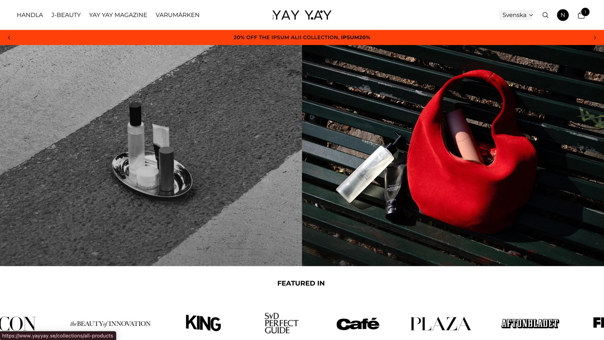
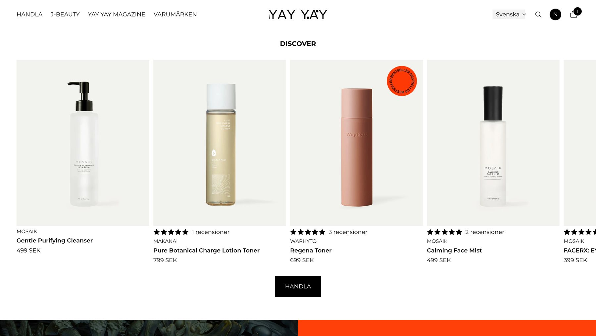
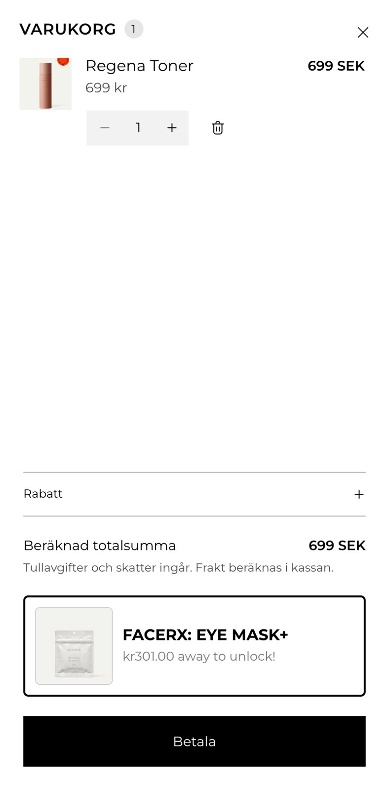
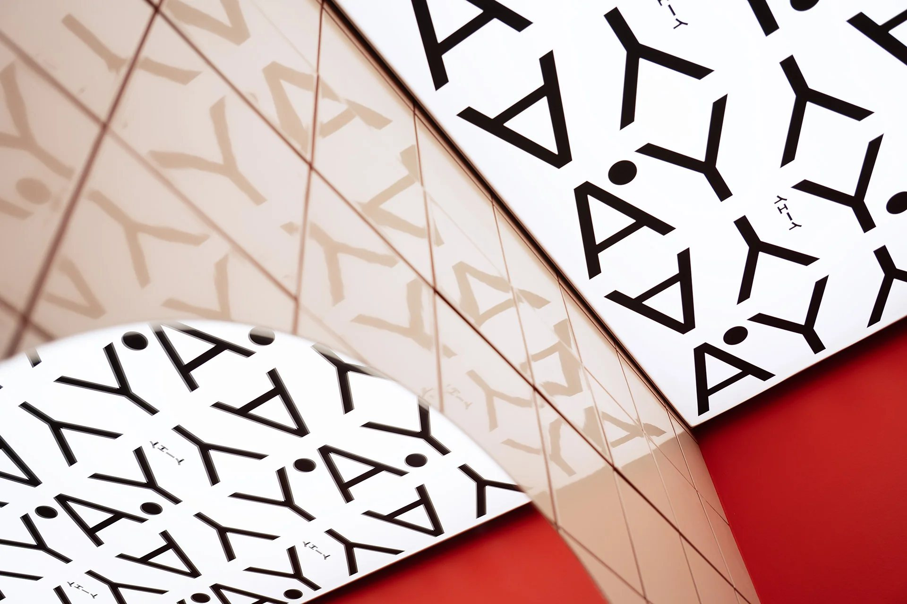
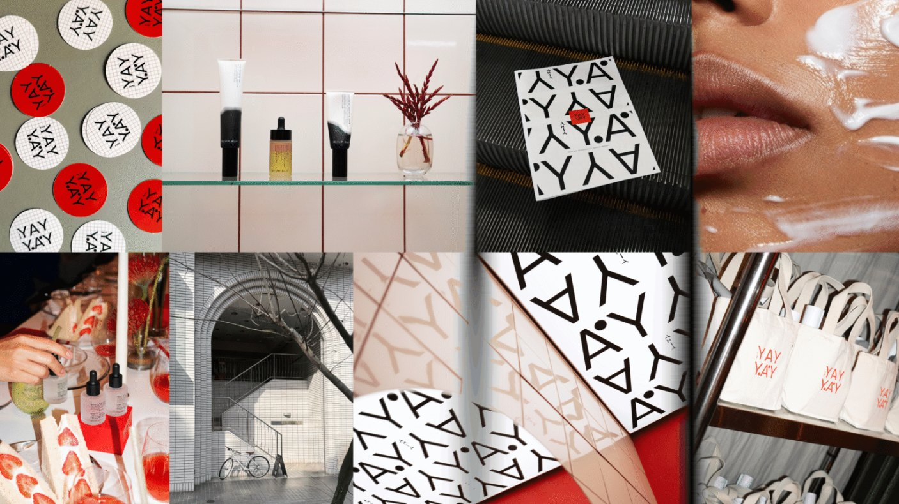
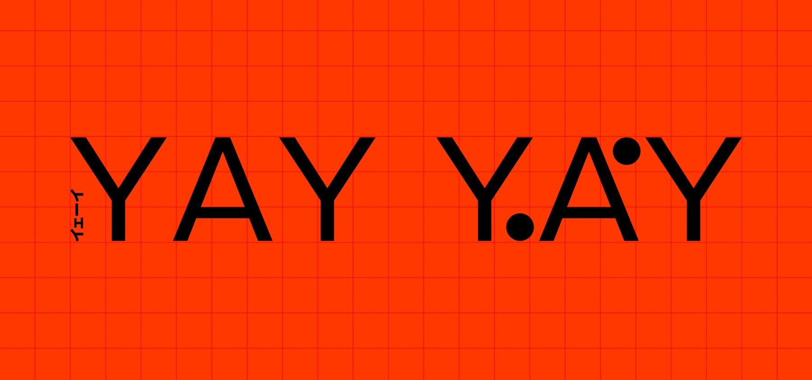
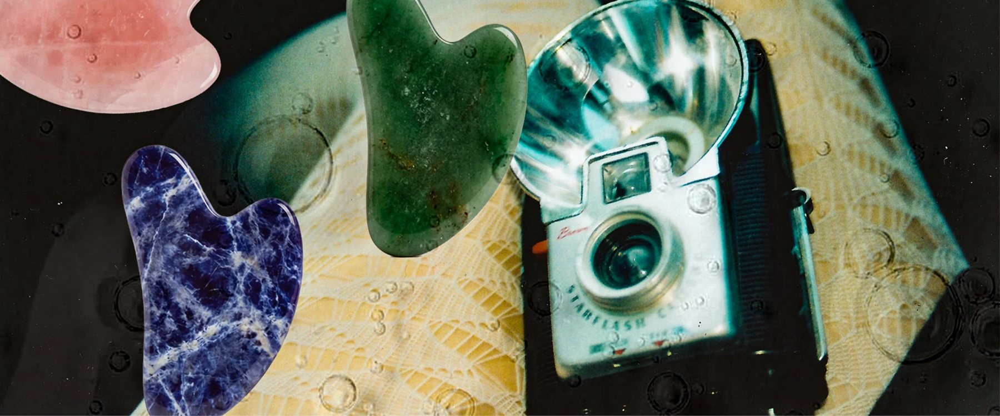

YAY YAY

Overview
YAY YAY is a Japanese skincare shop. For six months I improved its website and visual content as UX/UI and graphic designer.
UX/UI design and layout
I gave the layout more whitespace, a clearer hierarchy and less on-screen information.
Product images are shown like gallery exhibits on clean white backgrounds, so each product stands out.



E-commerce experience
I redesigned the shopping cart and the navigation menu, so customers find key information faster and reach checkout with less friction.

Art direction and graphic design
I made imagery for newsletters, editorial articles and product presentations, using one consistent visual language: Japanese skincare aesthetics with a clean, editorial look.




Iteration and impact
I worked on the site regularly for six months and improved it step by step. Conversion rates increased after successive improvements.
Key takeaways
Small changes to layout, navigation and the cart can make a clear difference to the shopping experience.
Good design balances a strong visual identity with functional clarity, and keeps iterating.